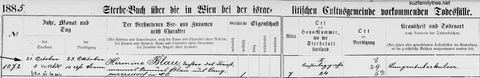

Samuel Blau
1851–1931
Life events
| Hebrew Name | 1851 · Shlomo Menachem Aryeh son of Mendel כה שלמה מנחם אריה בך מענדל |
|---|---|
| Born | 17 Dec 1851 · Czabaj-Cápor, Nitriansky, Slovakia Map |
| Married | 13 Jun 1875 · Betti Borbola Fuchs · Urmeny, Nitriansky, Slovakia Map |
| Lived | 24 Feb 1876 · 2103 Hauptplatz 6, Langenzersdorf, Korneuburg, Lower Austria, Austria Map · Was House #87. |
| Occupation | 1878 · Färber - fabric dyer. Per daughter Hermine's birth record |
| Occupation | 1882 · Färbermeister - Master fabric dyer. Per son Henrik's birth record |
| Occupation | 12 Oct 1891 · 1020, Kleine Pfarrgasse 29, Vienna, Austria Map · Kleinhändler - retailer. Per Josef's birth record |
| Lived | 15 May 1892 · 1020, Kleine Pfarrgasse 29, Vienna, Austria Map · Witness on wife's 1st cousin's son's Fritz Kohn's birth record |
| Lived | 8 Jan 1894 · 1020, Kleine Pfarrgasse 29, Vienna, Austria Map · Witness on grandson Edmund's birth record. |
| Lived | |
| Died | |
| Buried |
Family
Samuel Blau1851–1931
Betti Borbola Fuchs1850–1933
Children
- Ernestine Blau1876–1931

Hermine Blau1878–1885 Emanuel Blaub. 1880
Emanuel Blaub. 1880 Heinrich Blau1882–1937
Heinrich Blau1882–1937- Oskar Blau1886–1931
 Richard Blau1888–1943
Richard Blau1888–1943 Josef Blau1891–1944
Josef Blau1891–1944 Edmund Blau1894–1942
Edmund Blau1894–1942
Photos
Betti Borbola Fuchs
Samuel Blau

Samuel Blau

Samuel Blau

Betti Borbola Fuchs
Samuel Blau
Ernestine Blau
Jakab Weisz
Anna Maria Schepan
Teresa Feldman
Josef Blau
Betti Borbola Fuchs
Samuel Blau
Ilonka 'Helen' Blau
+13 more

Anna Maria Schepan
Teresa Feldman
Josef Blau
Betti Borbola Fuchs
Samuel Blau
Richard Blau
+3 more

Samuel Blau
Samuel Blau

Samuel Blau

Samuel Blau